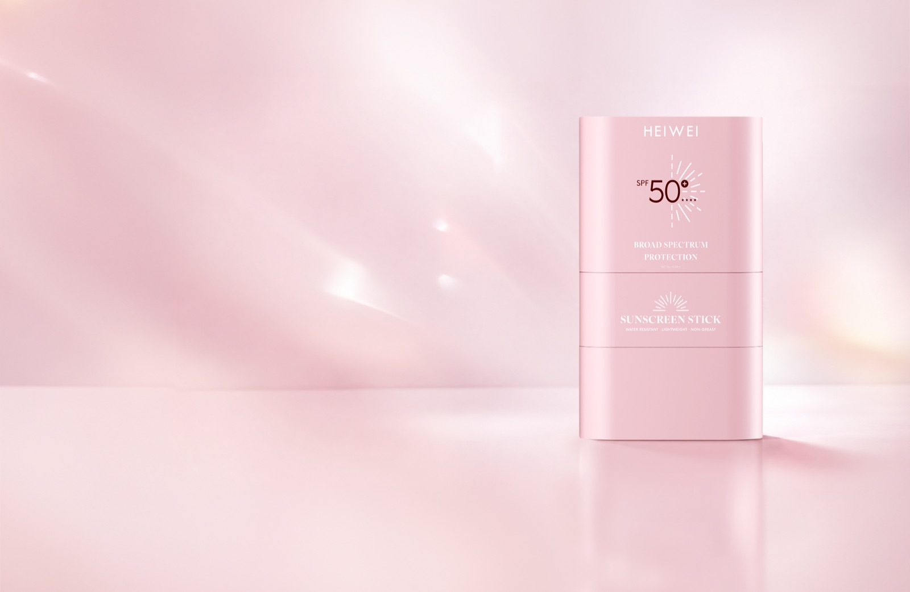
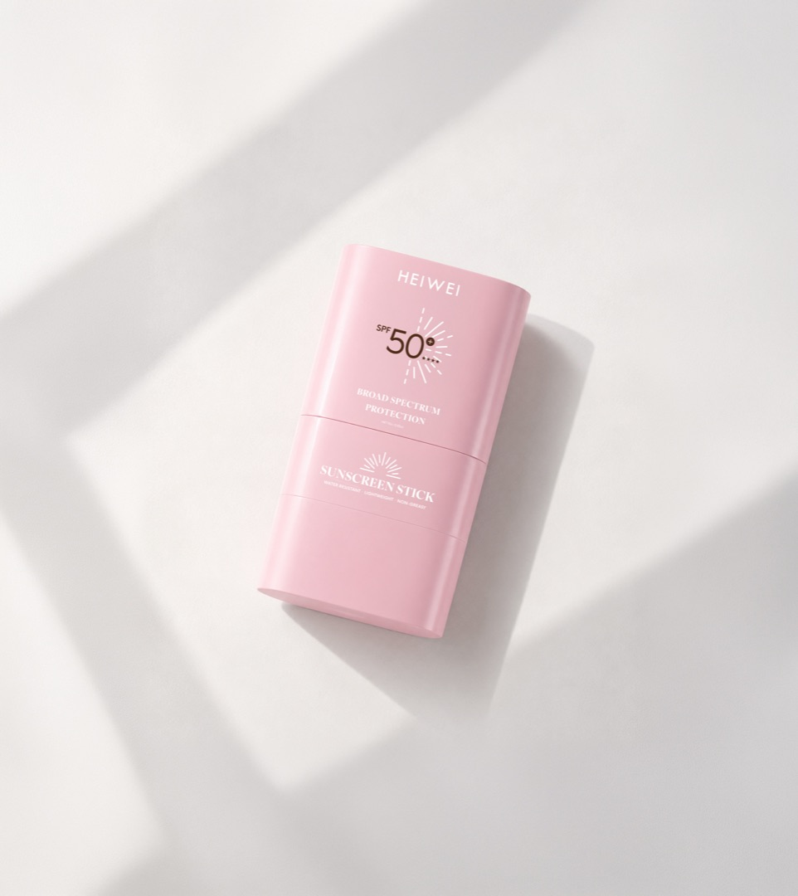
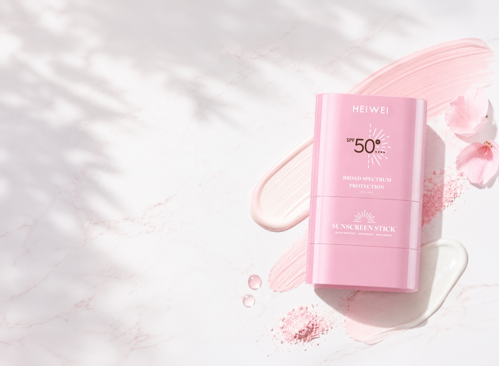
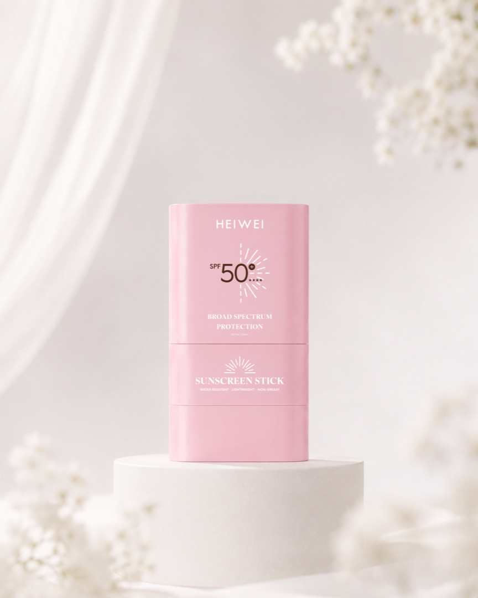
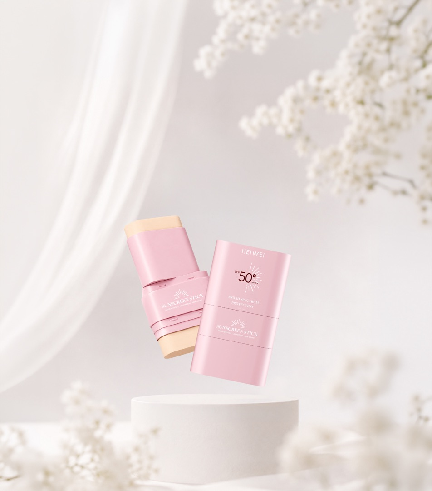
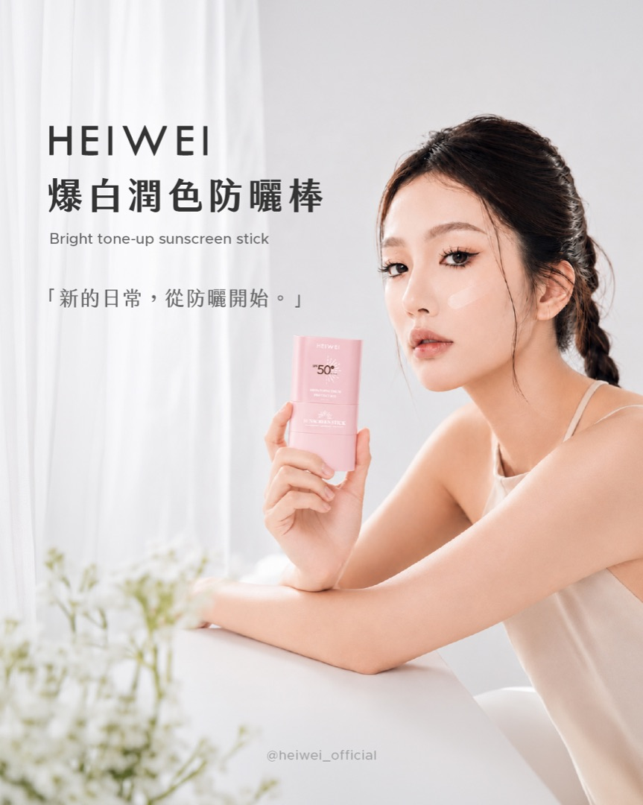

HEIWEI
偽素顏的終極秘密
Sunlit glow
高效防護基準｜防曬 × 底妝 × 保養，一支到位
BRIGHT TONE-UP SUNSCREEN STICK

Why you skip it
不是你懶，是以前的防曬真的很難搞。
一出門就一層油膜，脫妝比上妝快。
妝也毀了、手也黏了，乾脆不補。
白到不自然，還得再蓋一層底妝。
所以我們把它做成一支推開就好的棒狀防曬
擋紫外線、順手修飾膚色、同時養著肌膚
UV Timeline
台灣夏季典型的紫外線強度變化。點上方時段，看看什麼時候該補防曬。
通勤出門，UV 開始爬升
中量級正中午，紫外線直射
危險級午後外出，別以為過中午就沒事
過量級天色轉暗，一天的防曬結束
低量級＊ 數值為台灣夏季晴天的典型參考值，實際請以中央氣象署即時發布為準。
3 in 1 Formula
點選下方切換，看看每一項各自負責什麼。

抵禦 UVA / UVB 雙重紫外線，達到高效防曬基準。防水抗汗配方，海邊、球場、通勤都撐得住。
Broad SpectrumWater Resistant免沾手補擦
膏體帶自然潤色，推開後修飾暗沉與不勻，做出「偽素顏」的乾淨膚感。趕時間的早上，這一支就夠了。
勻亮膚色柔焦毛孔補防曬不毀妝
添加專利植萃美白勻亮因子與保濕成分，一整天維持舒適膚感，不緊繃、不乾裂。
專利植萃保濕舒緩不致粉刺Protection Formula
點開每一項，看看它們在做什麼。
Comparison
同樣是防曬棒，差別在防曬之後還剩下什麼。
| 項目 | 一般防曬棒 | 爆白潤色防曬棒 |
|---|---|---|
| 防曬效果 | 基礎防曬 | 高效防曬SPF50+ ★★★★ |
| 潤色效果 | 無色，多數以透明為主 | 潤色底妝自帶潤色，可作為日常底妝 |
| 便利性 | 免沾手，方便補防曬 | 免沾手設計補防曬同時兼顧妝感 |
| 使用體驗 | — | 控油不黏膩不致粉刺配方 |
| 保養成分 | — | 亮白保養添加專利植萃美白成分 |
| 附屬設計 | — | 自帶化妝海綿推開後隨手勻開 |
How to use
保養完成後，於臉部乾爽狀態下旋出適量膏體。
沿額頭、雙頰、鼻樑、下巴輕輕推開，全程不沾手。
用隨附化妝海綿按壓推勻，讓潤色更服貼自然。

外出補防曬時直接推塗於妝面上，再以海綿輕壓即可，不會把妝推花。建議每 2–3 小時、或大量流汗、擦拭後補擦一次。
Daily scenes
「新的日常，從防曬開始。」適合日常外出、通勤、旅行使用。

Specification
| 品名 | HEIWEI 爆白潤色防曬棒（Bright Tone-Up Sunscreen Stick） |
|---|---|
| 容量 | NET 15g / 0.53oz |
| 防曬係數 | SPF50+ ★★★★（廣效防護 Broad Spectrum） |
| 質地 | 棒狀膏體，自帶潤色，防水抗汗、不黏膩 |
| 適用 | 各種膚質，日常外出、通勤、旅行、戶外活動 |
| 附屬 | 隨貨附化妝海綿 |
FAQ
SPF50+ ★★★★｜防曬 × 底妝 × 保養｜NET 15g
HEIWEI · Bright Tone-Up Sunscreen Stick